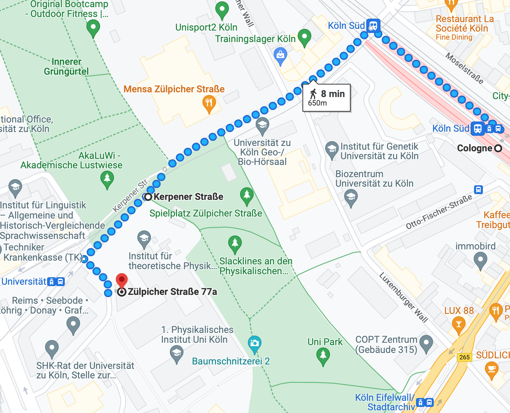
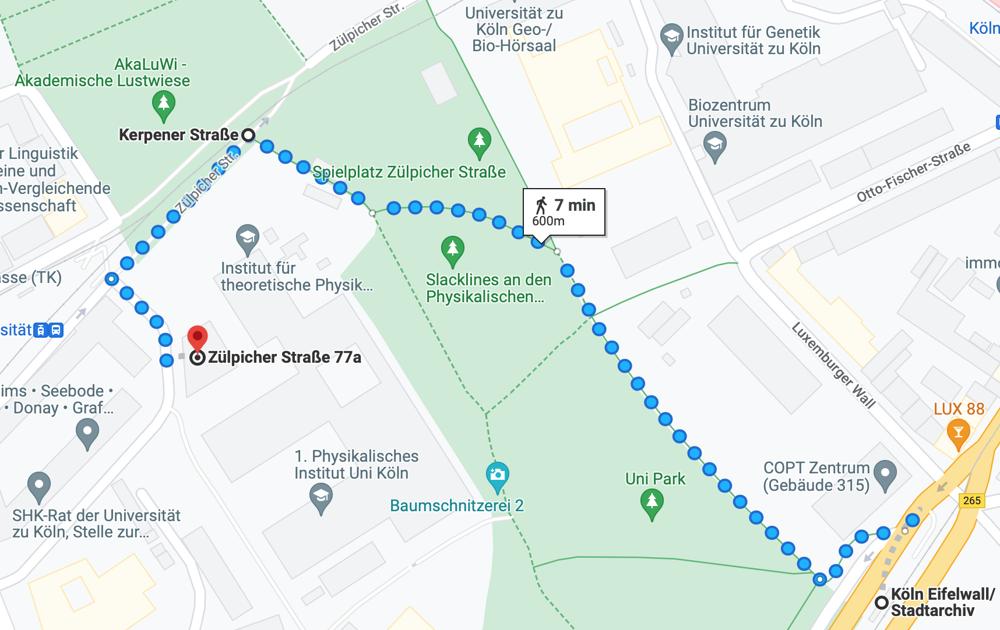

Logistics
Address: Zülpicher Str. 77a, 50937 Köln
Location of the B3D Workshop on google maps
Travel by Train (Zug)
To travel from Cologne Main Station (Köln Hbf) to Cologne South station (Köln Süd Stattion) by train (train RE5, RB24 or RB26 heading to Bonn Hbf), you will need to first find out if there is a train route that connects these two locations. You can do this by using DB app (DB Navigator) to check the train schedule. Once you have determined that there is a train that goes from Köln Hbf to Köln Süd, you will need to purchase a ticket for the train. You can do this at the train station or online via DB app.
When you arrived Köln Süd you need to walk to the workshop, you will first need to determine if the distance of about 700 meters is feasible to walk. If you feel comfortable walking this distance, you can simply follow the most direct route which is showed on below. You can use a map or a navigation app to help you find the best way to walk.

Travel by Tram 18 (Straßenbahn 18)
To travel from Cologne main station (Köln Hbf) to Köln Eifelwall/ Stadtarchiv station by tram, you will need to first locate the tram stops near Cologne main station (Dom/Köln Hbf in underground or Breslauer Platz Station). Once you have found the nearest tram stop, look for a tram heading in the direction of Köln Eifelwall/ Stadtarchiv station (5-6 stops heading to Köln Klettenbergpark). You will need to purchase a ticket for the train. You can do this at the train station or online via DB Navigator (DB app).
Once you have arrived at Köln Eifelwall/ Stadtarchiv station, you can walk to the workshop by following the map provided. The workshop is approximately 600 meters, from the station, so the walk should take about 10 minutes depending on your pace. You can use a map or a navigation app to help you find the best way to walk.
